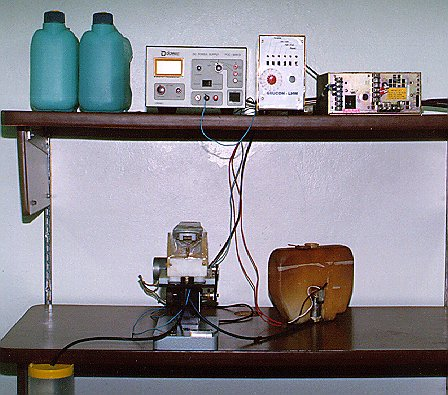

OBJETIVOSEste trabalho tem por objetivo o desenvolvimento de um equipamento de micro-furação por dissolução anódica e o conhecimento do comportamento do processo com a variação de parâmetros. INTRODUÇÃOO processo de dissolução anódica dos metais é baseado na eletrólise onde ocorre a retirada de metal átomo à átomo em uma célula eletrolítica. As vantagens do processo são; a não introdução de tensões residuais, possibilidade de usinar materiais de difícil usinabilidade por meios tradicionais. A desvantagem é a possibilidade de usinar somente materiais condutores de eletricidade. PROCEDIMENTOSFoi realizado o desenvolvimento e construção numa primeira etapa do trabalho de um protótipo de um equipamento de micro-furação por dissolução anódica simples e compacto, ver figura 1.  Este equipamento permite a variação de poucos parâmetros de processo, tensão de trabalho, velocidade de avanço, solução eletrolítica, concentração da solução eletrolítica. Numa segunda etapa pretende-se o desenvolvimento de um equipamento com maiores possibilidades de variação de parâmetros para permitir estudos mais aprofundados das relações entre os parâmetros da micro-furação por dissolução anódica. Para a coleta de dados do processo é utilizado equipamentos ligados a um microcomputador onde são armazenados e processados para posterior estudo. Os parâmetros que pretende-se estudar nesta segunda etapa, além dos possíveis de estudo na primeira etapa, são: pH, temperatura, pressão e fluxo da solução eletrolítica, e assim realizar um estudo mais completo do processo. RESULTADOSNa primeira etapa do trabalho já foram obtidos resultados satisfatórios
em ensaios realizados. Nestes ensaios foram obtidos microfuros, ver figura
2, diâmetro de aproximadamente 1,7 mm, com boas características
de circularidade, paralelismo e perpendicularismo das paredes e fundo levemente
arredondado.
|

| Contato: PROCESP Walter Lindolfo Weingaertner Prof. Dr.-Ing |
Última Atualização 21.06.2006 |